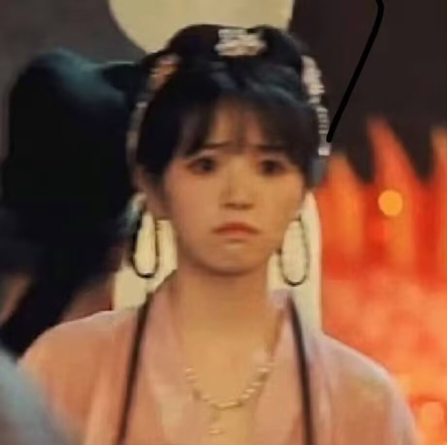
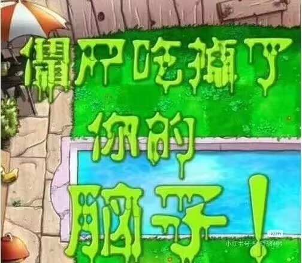

🎮 Yuzhe 的俄罗斯方块
📖 操作说明
← →
左右移动
↓
加速下落
空格
方块变形
P
暂停 / 继续
⟳
⏸
◀
▼
▶
📊 游戏信息
游戏状态
运行中
当前得分
0
下一个
🎮 准备好了吗？
按任意键开始游戏
或点击下方按钮
📱 触屏操作提示
◀ ▶ — 左右移动
▼ — 加速下落（快速点击加快下落）
⟳ — 旋转方块
⏸ — 暂停 / 继续
开始游戏
⏸ 游戏已暂停

按
P
键继续游戏
▶ 继续游戏
🏆 游戏结束
最终得分：
0

再来一局
关闭